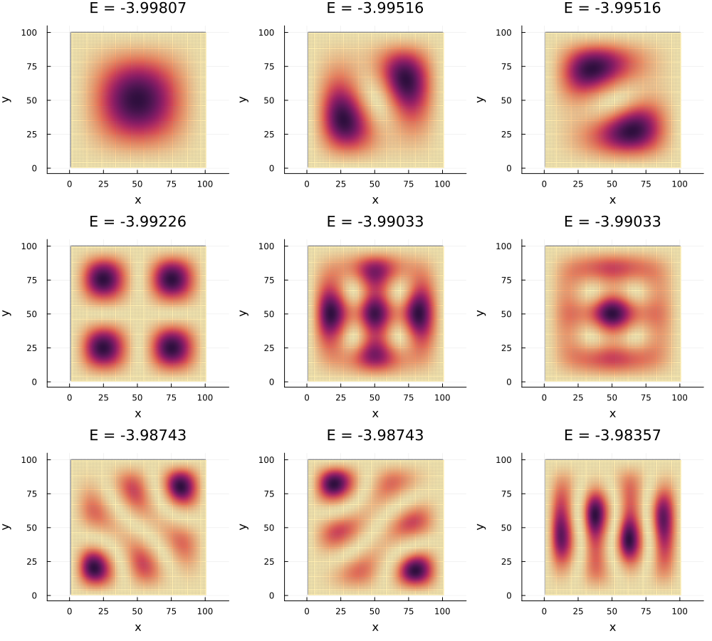

States and Operators
In the previous chapter we have seen how to define a Hamiltonian for a lattice model. In this chapter we will see how to work with other types of operators, such as measurements and diagonalizing.
Builtins
There are some basic building blocks that can be used to create states and operators. These functions are taken from QuantumOptics.jl package, but extended to work with lattices:
basisstatecreates a state vector in the basis of a lattice.diagonaloperatorcreates a diagonal operator in the basis of a lattice.transitioncreates a transition operator between two states in the basis of a lattice.number,destroy, andcreateare the number, annihilation, and creation operators in the basis of a lattice.
Remember the general rule of thumb for working with lattices: You can provide a lattice (and optionally the internal basis) instead of a QuantumOptics.Basis, and a site (or a (site, internal_index) tuple) instead of an integer index.
For example, the basisstate function creates a state vector in the basis of a lattice. Normally it takes a QuantumOptics.Basis and an index as arguments, and returns a Ket object. However, you can use a lattice and a site as arguments to create a state vector in the basis of the lattice:
julia> using LatticeModelsjulia> l = SquareLattice(6, 6);julia> site = l[!, x = 3, y = 3]2-dim Bravais lattice site in 2D space at [3.0, 3.0]julia> l_bas, ind = LatticeBasis(l), site_index(l, site);julia> psi1 = basisstate(l_bas, ind); # The pure QuantumOptics.jl wayjulia> psi2 = basisstate(l, site); # The LatticeModels.jl wayjulia> psi1 == psi2true
If you work in a composite system (e. g. a lattice with a spin degree of freedom), you can either use composite indexing or construct the state as tensor product of the states for each subsystem:
julia> spin = SpinBasis(1//2)Spin(1/2)julia> psi1_composite = basisstate(l, spin, (site, 1));julia> psi2_composite = basisstate(spin, 1) ⊗ basisstate(l, site); # Note the order!julia> psi1_composite == psi2_compositetrue
The order of the tensor product is important. The first argument is the on-site degrees of freedom, and the second is the lattice. This convention is consistent in the rest of the package — the reason behind this is performance of construct_operator and OperatorBuilder.
If this order is not followed, you will probably get an error somewhere in your calculations.
The diagonaloperator function creates a diagonal operator in the basis of a lattice. Normally it takes a QuantumOptics.Basis and a vector of values (or a single value) as arguments, and returns an Operator object. There are several convenient ways to use this function with lattices. As an example let's consider the position operator in the basis of a lattice:
julia> xval = coordvalue(l, :x)LatticeValue{Float64} on a 36-site SquareLattice in 2D space Values stored in a Vector{Float64}: [1.0, 1.0, 1.0, 1.0, 1.0, 1.0, 2.0, 2.0, 2.0, 2.0 … 5.0, 5.0, 5.0, 5.0, 6.0, 6.0, 6.0, 6.0, 6.0, 6.0]julia> X_1 = diagonaloperator(l_bas, xval.values); # The pure QuantumOptics.jl wayjulia> X_2 = diagonaloperator(l, :x); # The LatticeModels.jl way, with a site propertyjulia> X_3 = diagonaloperator(xval); # The LatticeModels.jl way, with a LatticeValuejulia> X_1 == X_2 == X_3true
This notation allows converting any LatticeValue or Site parameter to an operator. Hence, diagonaloperator(l, Coord(1)) is also valid and will return the same operator.
Generally, a good value to create a custom diagonal operator is by using the LatticeValue approach.
Consider this example: in the Haldane model the diagonal part is $m$ on the A sublattice and $-m$ on the B sublattice. You can create this operator with the following code:
l = HoneycombLattice(6, 6)
m = 3
ms = LatticeValue(l) do site
site.index == 1 ? m : -m
end
Op = diagonaloperator(ms)Also note the coordoperator and coordoperators functions that do the same thing as coordvalue and coordvalues, but return the operator instead of the value:
julia> X, Y = coordoperators(l);julia> X == X_1true
Measurements
The most common type of measurements is the local density: the average number of particles at each site. This can be calculated using the localdensity function — it takes a state (a QuantumOptics.Ket vector or a QuantumOptics.Operator representing the density matrix) and returns a LatticeValue with the density at each site.
using LatticeModels, Plots
l = GrapheneRibbon(6, 4)
H = tightbinding_hamiltonian(l)
d = localdensity(groundstate(H))
plot(d)The localdensity function uses the following formula to calculate the density at each site: $\rho_i = \text{Tr}(\hat{n}_i \hat{\rho})$, where $\hat{n}_i$ is the number operator at site $i$ and $\hat{\rho}$ is the density matrix. Note that if the values are complex, the function will return the real part of them. This is what makes the next example work.
The local Chern marker is a quantity that can be used to detect topological phases in a lattice model. It can be calculated using the following formula:
\[\mathcal{C}(r) = 4\pi \text{Im} \langle r | P X P Y P | r \rangle\]
Here $P$ is the projector onto the occupied states (e. g. the density matrix), and $X$ and $Y$ are the position operators. The local Chern marker is a real number that can be calculated for each site in the lattice.
Let's do this for a QWZ model Hamiltonian on a square lattice:
using LatticeModels, Plots
l = SquareLattice(6, 6)
sys = l ⊗ SpinBasis(1//2)
ms = ones(l)
ms[x = 3 .. 4, y = 3 .. 4] .= -1
H = qwz(l, ms)
P = densitymatrix(H, mu=0, statistics=FermiDirac)
X, Y = coordoperators(sys)
c = localdensity(-4π * im * P * X * P * Y * P)
heatmap(c, title="Local Chern marker")A generalization of the density measurement is the localexpect function. It takes a local operator $\hat{A}$ and a state, and calculates the expectation value of the operator at each site: $A_i = \text{Tr}((\hat{A} \otimes \hat{n}_i) \cdot \hat{\rho})$, where $\hat{n}_i$ is the number operator at site $i$ and $\hat{\rho}$ is the density matrix. Note that the result is a complex numbered LatticeValue.
As an example, let us visualize a spin wavefunction on a square lattice:
using LatticeModels, Plots
l = SquareLattice(10, 10)
x, y = coordvalues(l)
spin = SpinBasis(1//2)
gauss = @. exp(-0.05 * ((x - 5.5) ^ 2 + (y - 5.5) ^ 2))
wave = @. exp(im * (x + y))
ψ = basisstate(spin, 1) ⊗ (@. gauss .* wave) + basisstate(spin, 2) ⊗ (@. gauss * conj(wave))
normalize!(ψ)
σx = sigmax(spin)
p = plot(layout=2, size=(800, 400))
plot!(p[1], localdensity(ψ), title="Local density")
plot!(p[2], localexpect(σx, ψ) .|> real, title="σx projection")Diagonalizing
To diagonalize a Hamiltonian or any other operator, you can use the diagonalize function. It takes an operator and returns a EigenSystem object with the eigenvalues and eigenvectors of the operator.
using LatticeModels, Plots
l = GrapheneRibbon(6, 4)
H = haldane(l, 0.1, 1)
eig = diagonalize(H)Diagonalized Hamiltonian (48 eigenvectors)
Eigenvalues in range -4.27959 .. 4.27959
System: One particle on 48-site HoneycombLattice in 2D spaceThis struct simplifies the access to the eigenvalues and eigenvectors of the operator. You can access the eigenvalues with eig.values, and eigenvectors as Kets can be obtained with the bracket notation eig[i] or eig[value = E]:
# The states are sorted by real part of the eigenvalues, so
psi = eig[1] # `psi` is the ground state
psi2 = eig[value = 0] # `psi2` is the state with zero energy
p = plot(layout = @layout[a b; c], size=(800, 800))
plot!(p[1], localdensity(psi), title="Ground state")
plot!(p[2], localdensity(psi2), title="Zero energy state")
scatter!(p[3], eig.values, title="Spectrum", lab="")You can find the ground state of a Hamiltonian in one line using the groundstate function:
psi = groundstate(H)To evaluate both the ground state and its energy, use the findgroundstate function:
E0, psi = findgroundstate(H)The diagonalize function under its hood uses the eigen function from the LinearAlgebra standard library. However, this does not work for non-trivial matrix types (e. g. sparse matrices or GPU arrays). For such cases you can pass the second argument to the diagonalize function, which is a Symbol indicating the method to use for diagonalization. To use the eigsolve function from the KrylovKit.jl package, you can pass :krylovkit as the second argument. Since this solves the eigenvalue problem iteratively, you can also pass the keyword arguments: n for the number of eigenvalues to compute, v0 for the initial guess, and the keyword arguments for the eigsolve function.
l = SquareLattice(100, 100) # A really big lattice
H = tightbinding_hamiltonian(l)
eig = diagonalize(H, :krylovkit, n=9) # Compute only 9 eigenvalues with smallest real part
p = plot(layout=9, leg=false, size=(1000, 900))
for i in 1:9
plot!(p[i], localdensity(eig[i]), title="E = $(round(eig.values[i], digits=5))",
ms=2, msw=0, msa=0) # Plot with small markers with no outline
end
plot!()
EigenSystem objects have a wide range of applications in this package. One of them is creating equilibrium states for a given Hamiltonian. This can be done using the densitymatrix function, which is described in the next section.
Density matrix
After you diagonalize a Hamiltonian, you can calculate the density matrix for the system. Use the densitymatrix function to do this:
using LatticeModels
l = SquareLattice(6, 6)
sys = System(l, SpinBasis(1//2), mu=0, statistics=FermiDirac, T=0.1)
H = tightbinding_hamiltonian(sys)
eig = diagonalize(H)
P1 = densitymatrix(eig) # Use the default parameters from the `System`
P2 = densitymatrix(eig,
statistics=BoseEinstein, T=0, mu=1) # Or you can override them┌ Info: Creating density matrix: FermiDirac distribution, T = 0.1, μ = 0.0
└ set `info=false` to disable this message
┌ Info: Creating density matrix: BoseEinstein distribution, T = 0, μ = 1
└ set `info=false` to disable this messageNote that the densitymatrix function can also be applied to a Hamiltonian object, in which case it will first diagonalize the Hamiltonian and then calculate the density matrix:
P1_1 = densitymatrix(H)
@assert P1 ≈ P1_1
P2_1 = densitymatrix(H, statistics=BoseEinstein, T=0, mu=1)
@assert P2 ≈ P2_1┌ Info: Creating density matrix: FermiDirac distribution, T = 0.1, μ = 0.0
└ set `info=false` to disable this message
┌ Info: Creating density matrix: BoseEinstein distribution, T = 0, μ = 1
└ set `info=false` to disable this messageThe densitymatrix function uses a simple formula to calculate the density matrix:
\[\hat{\rho} = \sum_{i} \rho(E_i) | \psi_i \rangle \langle \psi_i |\]
Here $E_i$ are the eigenvalues of the operator, $\psi_i$ are the corresponding eigenvectors, and $\rho(E)$ is the distribution function defined by the statistics, T, and mu parameters. By default, when no additional parameters are passed to the System or densitymatrix, the density matrix will be a thermal state at zero temperature.
The basis for these computations is the projector function, which takes a function p and an EigenSystem object d that represents the diagonalized operator $\hat{O}$. The return value is an operator $\hat{P}$ defined by the formula:
\[\hat{O} = \sum_{i} E_i | \psi_i \rangle \langle \psi_i |, \hspace{1cm} \hat{P} = \sum_{i} p(E_i) | \psi_i \rangle \langle \psi_i |\]
Here $E_i$ are the eigenvalues of the operator $\hat{O}$, and $| \psi_i \rangle$ are the corresponding eigenvectors. The function p is applied to the eigenvalues to obtain the diagonal elements of the density matrix. Here is an example of how to use this function:
l = SquareLattice(6, 6)
H = tightbinding_hamiltonian(l)
eig = diagonalize(H)
P1 = projector(x -> x < 0, eig) # Projector onto the states with energy < 0
P2 = projector(x -> 1 / (1 + exp(x)), eig) # Fermi-Dirac distribution
P3 = projector(eig[1:4]) # Projector onto the first 4 states
# Note how we slice the `eig` object to get the first 4 states